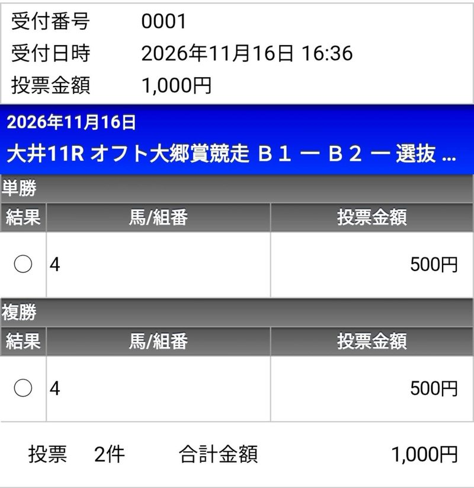

前日成績
11/15 金沢8R 北國王冠 ◎3 ヴィアメントは7着でした。単勝・複勝ともハズレで、1,000円→0円です。詳しくは昨日の結果報告の記事に書きました。
当日予想
2026/11/16(月) 大井11R オフト大郷賞（B1一B2一選抜特別）
20:10発走、ダート1800m、9頭立てです。
◎4 ホウオウカブキ 本田重
４ 単勝 ５００円
４ 複勝 ５００円
JRAで挙げた3勝はすべて右回り1800mのダートで、今回の大井・右外回り1800mと条件が合います。前走は8月3日の船橋・明鐘岬特別（B1B2選抜、1800m）を勝っていて、同格・同距離で勝ち切った実績もあります。好位から流れに乗れる脚質で、少頭数9頭立ても向きそうです。105日ぶりで大井は初めてなのが割り引き材料です。

＜本年成績＞
中央 213戦26勝 291,400円→181,380円 -110,020円 62%
地方 9戦3勝 9,000円→13,000円 +4,000円 144%
払戻"金"投資 108,020円→96,419円 -11,601円 -10.74%